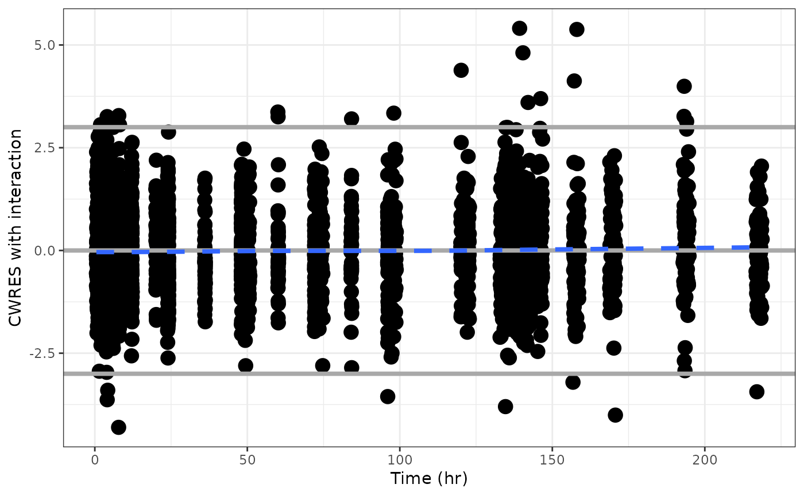

Layer functions
layer_h(x, hline = gh(), add_layers = TRUE, ...)
layer_s(x, smooth = gs(), add_layers = TRUE, ...)
layer_a(x, abline = ga(), add_layers = TRUE, ...)
layer_hs(x, ...)
layer_sh(x, ...)
layer_as(x, ...)
layer_sa(x, ...)
layer_dots(x, ...)
gs(
method = pm_opts$smooth.method,
se = FALSE,
lty = pm_opts$smooth.lty,
lwd = pm_opts$smooth.lwd,
col = pm_opts$smooth.col,
...
)
ga(
intercept = 0,
slope = 1,
lwd = pm_opts$abline.lwd,
lty = pm_opts$abline.lty,
col = pm_opts$abline.col,
...
)
gh(
yintercept = 0,
lwd = pm_opts$hline.lwd,
lty = pm_opts$hline.lty,
col = pm_opts$hline.col,
...
)a ggplot object
list of arguments for geom_hline
if FALSE no layers are added from
layer_s, layer_a, layer_h, or
combinations
passed to layering functions and geoms
list of arguments for geom_smooth
list of arguments for geom_abline
passed to the appropriate geom_
passed to the appropriate geom_
passed to the appropriate geom_
passed to the appropriate geom_
passed to the appropriate geom_
passed to geom_abline
passed to geom_abline
passed to geom_hline
Function names can be decoded as: h indicates horizontal
reference line, s indicates smoothing line,
a indicates abline (typically a line of
identity). The order of the the codes indicates the
order in which the layers are applied. For example,
layer_hs means to first add a horizontal reference
line and then add a smoothing line. Likewise, layer_s
adds a smoother, layer_a adds identity line, and
layer_y adds a horizontal reference line.
gs, ga, and gh are helper functions to create
default arguments to geom_smooth, geom_abline, and
geom_hline, respectively. The gx series
of functions are not exported.
df <- dplyr::filter(pmplots_data(), EVID==0 & BLQ==0)
cwresi_time(df) + geom_3s()
#> `geom_smooth()` using formula = 'y ~ x'

pmplots:::gs()
#> $method
#> [1] "loess"
#>
#> $se
#> [1] FALSE
#>
#> $lty
#> [1] 2
#>
#> $linewidth
#> [1] 1.35
#>
#> $col
#> [1] "#3366FF"
#>